Prologue
The immune system is organized in layers: physical barriers, then non-specific cellular responses, then a targeted adaptive system. Each layer feeds into the next. Lose one critical node, and the whole chain breaks.
Most battles your immune system fights are invisible. A threat enters, cells respond, it's gone before you feel a thing. This is not one of those stories. This is the story of the one that got through, not by force, but by patience.
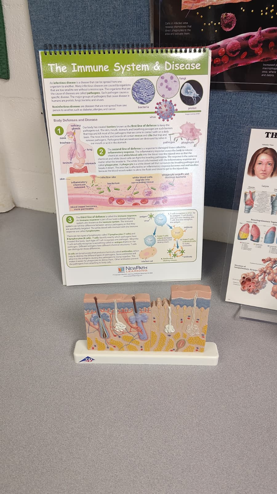
Chapter I: Know Your Enemy
Name: Human Immunodeficiency Virus. Type: retrovirus. It carries RNA, not DNA, and after entering a host cell it writes itself permanently into that cell's genome.
Human Immunodeficiency Virus (HIV) — Retrovirus
HIV spreads through blood, sexual secretions, and breast milk. It cannot pass through intact skin or survive long outside the body. It needs a direct route in, and in this story it found one: a small, undetected abrasion in mucosal tissue.
Why is it so dangerous? Because it targets helper T lymphocytes specifically, the cells that coordinate every branch of the adaptive immune response. As it destroys them, the body loses its ability to fight anything. The end stage is AIDS: a state in which ordinary infections become fatal.
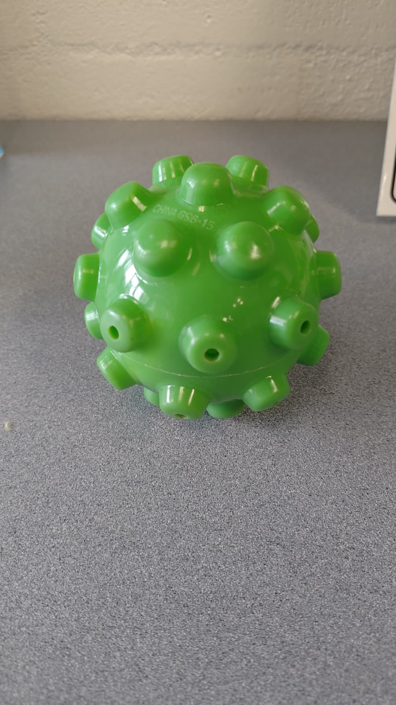
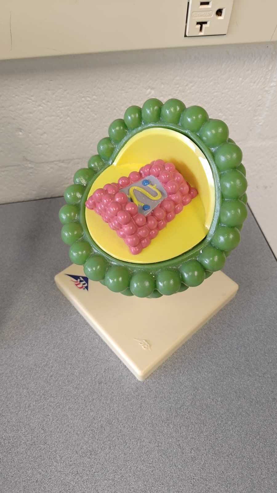
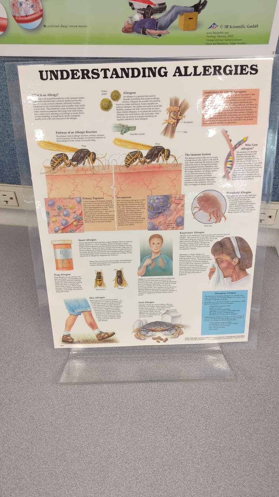
Chapter II: The First Wall
HIV had to get past three layers before it could reach a single T cell.
Skin's structure is its function. Tightly packed keratinocytes reinforced with keratin create a surface that is physically impenetrable to pathogens. The molecular composition of the epidermis IS the barrier.
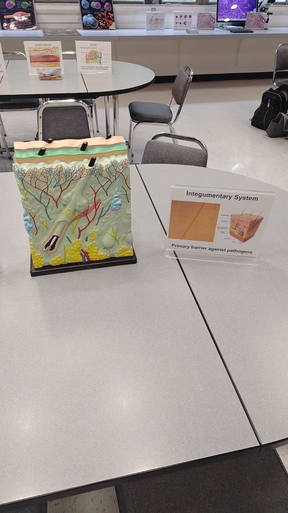
Skin is a multi-layered wall of keratin-packed cells. HIV cannot cross it. Mucous membranes line every opening in the body, trapping pathogens in sticky mucus before they can reach deeper tissue. Secretions like saliva and tears carry lysozyme, an enzyme that destroys many microbes on contact.
HIV bypassed all of it at one point: a tiny abrasion in mucosal tissue, too small to notice, long enough to matter. A few virions slipped through. The alarm had not yet sounded.
Chapter III: Fire
The first response was not targeted. It was loud, fast, and automatic.
Inflammation is a feedback loop. Damaged cells release signals that trigger the response; the scale of the threat calibrates the intensity of the response. The body turns the alarm up or down based on what it detects.
Wounded cells released a cascade of chemical alarms: histamines, prostaglandins, cytokines. Blood vessels near the breach dilated and became more permeable, flooding the area with fluid and cells. Heat, redness, swelling.
Natural killer cells (a type of T lymphocyte) patrol the body without needing specific instructions. They detected surface changes on HIV-infected cells and eliminated them on contact, fast and indiscriminate.
Neutrophils arrived as the frontline phagocytes, engulfing and destroying viral particles and debris in waves. Behind them, monocytes migrated in from the bloodstream and began maturing into macrophages, the cleanup crew that would soon become something more important.
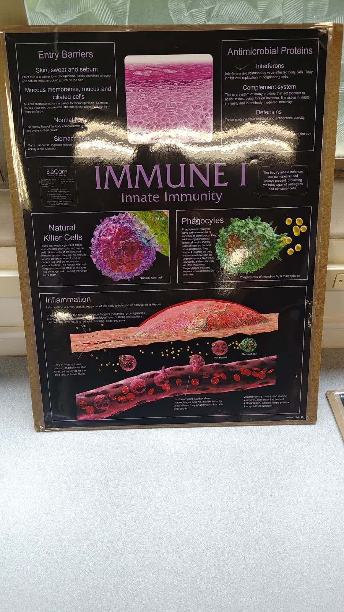
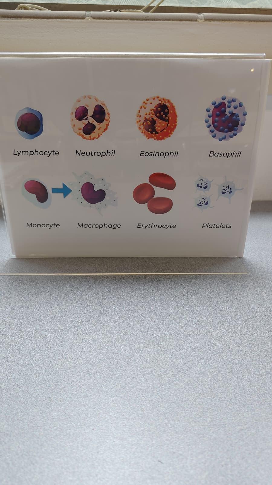
Chapter IV: Intelligence
Inflammation holds the line. The adaptive immune system wins the war. Or it's supposed to.
Cell-mediated immunity is a communication chain. Macrophage to helper T. Helper T to cytotoxic T. Every step is a molecular handshake. Break one link and the whole chain stops.
Macrophages consumed HIV particles, extracted fragments of the virus's surface proteins (antigens), and displayed them on their own membrane: antigen presentation. They became wanted posters for the adaptive system to read.
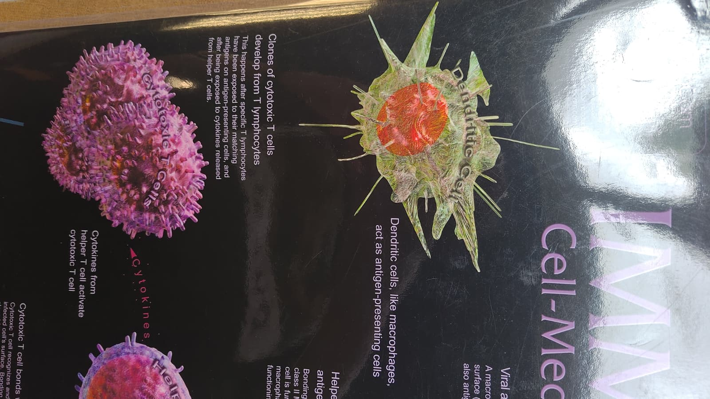
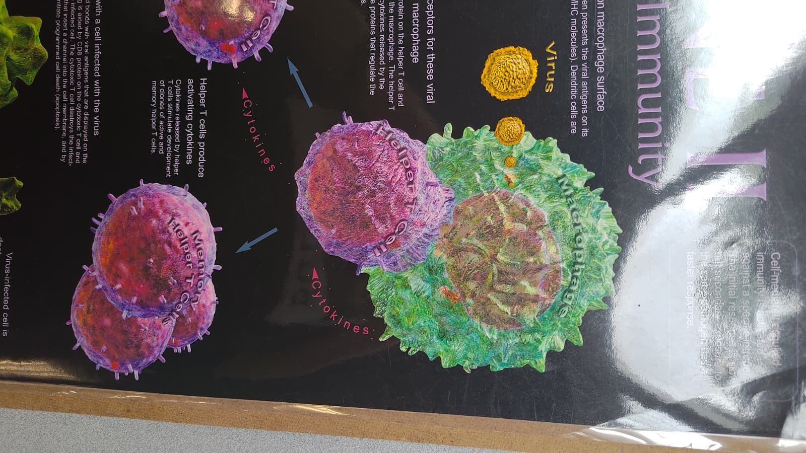
Helper T cells, matured in the thymus, read the antigen presentation and activated. They do not fight directly. They broadcast cytokines that mobilize everything else: the coordinators, the generals of the adaptive response.
Cytotoxic T cells received the signal and deployed, scanning every cell in the body for HIV's antigen signature. When they found it, they triggered the infected cell's self-destruction. Precise, lethal, specific.
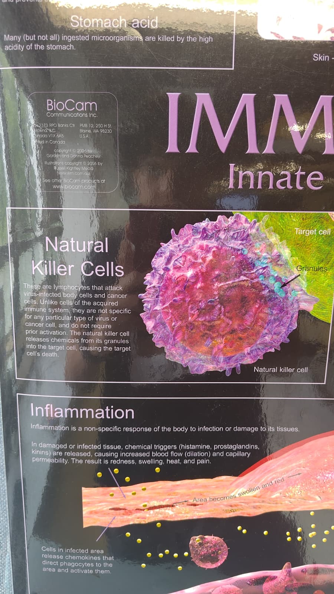
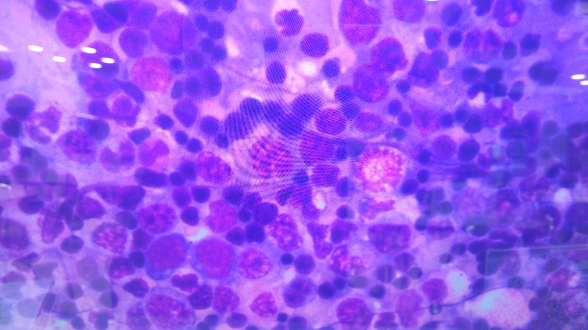
Memory T cells formed from the same activation signal, withdrawing from the fight to hold a long-term record of the HIV antigen for any future encounter.
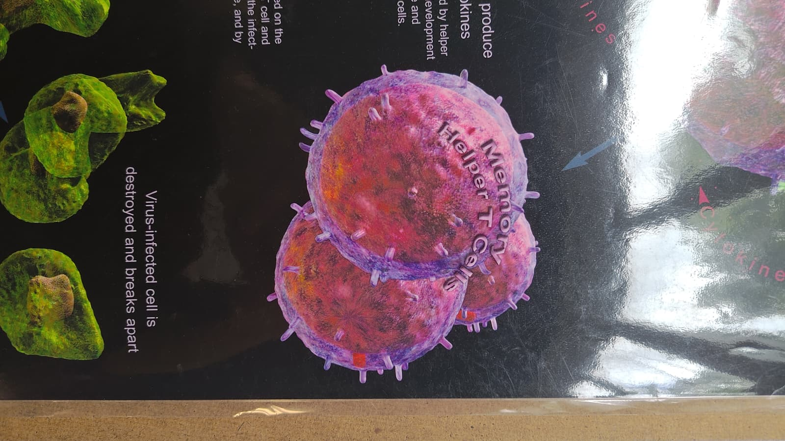
The Trick
HIV's surface proteins bind specifically to the CD4 receptor on helper T cells. Every helper T cell that activated to fight HIV became an ideal host for HIV to replicate inside. The commanders were being destroyed at the moment of their greatest activity. The body had no way to detect it yet.
Chapter V: Reinforcements
While the T cells fought, the B cells were already spinning up.
Antibodies are Y-shaped proteins with binding sites shaped precisely to match one antigen. That structural specificity is the entire mechanism: the shape of the molecule IS its function.
Helper T cytokines activated B lymphocytes, which differentiated into plasma B cells: factories producing thousands of antibodies per second, each shaped to bind HIV's surface proteins.
When antibodies locked onto HIV particles, they blocked the virus from entering new cells and coated it for rapid destruction by macrophages. Viral load dropped. The body looked like it was winning.
Memory B cells held the antibody blueprint in reserve, the same long-game strategy as memory T cells.
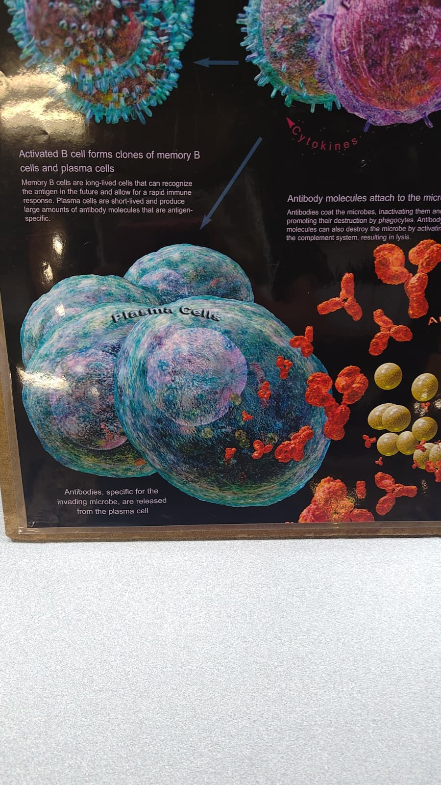
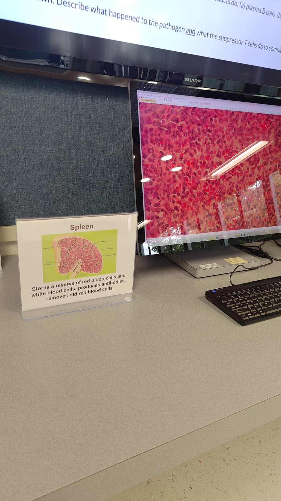
Chapter VI: Stand Down
The antigen levels dropped. The response wound down. The body thought it had won.
Suppressor T cells are the off-switch. They monitor antigen levels and release inhibitory signals when the threat appears contained, preventing the immune response from running indefinitely and damaging healthy tissue.
Suppressor T cells detected falling HIV levels and began shutting everything down: inhibitory cytokines quieted the cytotoxic T cells, slowed plasma B cell production, and wound down inflammation. The acute phase was over.
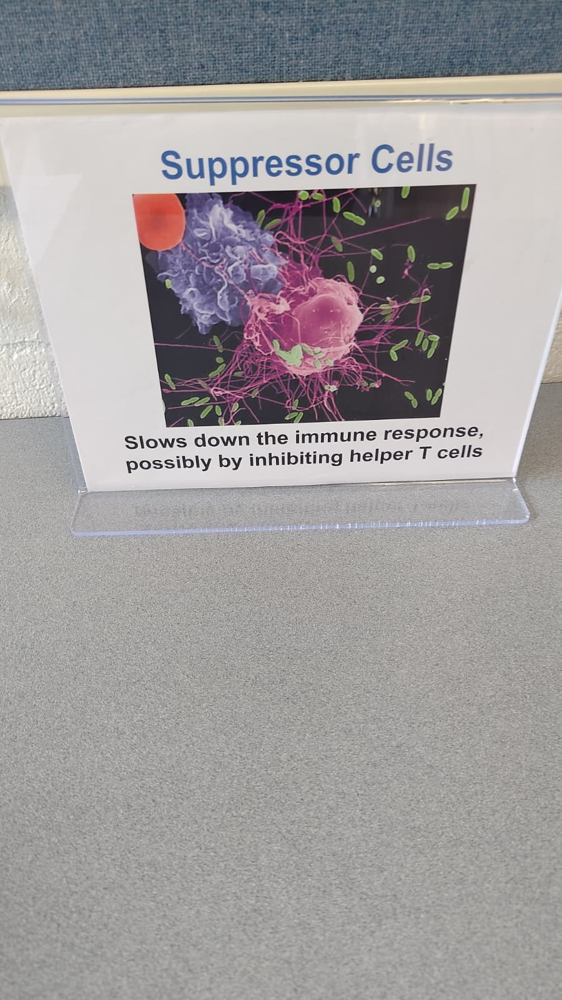
What They Didn't Know
During the weeks of acute infection, HIV had integrated its genome into some of the memory T cells created to remember it. Those cells carried the virus silently, dormant, invisible to immune surveillance. Every future immune challenge would reactivate them. Every reactivation would cost more helper T cells. The suppressor cells called off the response correctly. The threat they could detect was gone. The threat they couldn't detect was still there.
Epilogue: The Reckoning
This is AIDS.
Helper T cell counts fell. Slowly at first, then faster. Each immune challenge reactivated the HIV reservoir. Each reactivation cost more T cells. When counts dropped below 200 cells per cubic millimeter, the threshold was crossed. Not because HIV directly destroyed the body, but because there was no longer anyone coordinating the defense. Ordinary infections moved in unopposed.
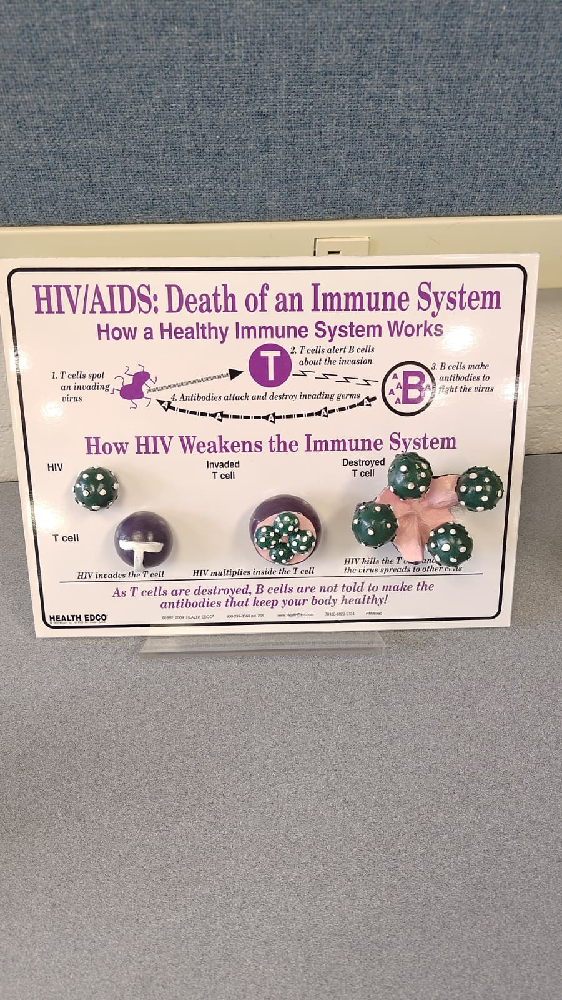
Every cell did its job. The barriers held everywhere they were intact. The alarm fired. Natural killer cells, neutrophils, monocytes all responded. Macrophages presented antigen. Helper T cells coordinated. Cytotoxic T cells killed. Antibodies neutralized. Suppressor T cells correctly called it off. The immune system executed perfectly.
HIV won anyway. It found the one node the system could not function without, embedded itself there, and waited. That is the story.
Portfolio: General Biology Concepts
- Complexity and Organization: The immune system is a multi-layered hierarchy. Its interdependence is its power and its vulnerability.
- Cells: Every defense here is cell-based. NK cells, neutrophils, monocytes, macrophages, helper T, cytotoxic T, memory T, plasma B, memory B, suppressor T: each a distinct cell type with a distinct molecular toolkit.
- Structure and Function: Keratin-packed skin IS the barrier. The Y-shape of an antibody IS its binding precision. CD4 receptors on helper T cells ARE why HIV targets them.
- Regulation and Feedback: Inflammation scales with the threat. Suppressor T cells end the response. Every phase is regulated by molecular feedback.
- Interactions: Remove any one cell-to-cell interaction from the chain and the adaptive response collapses. HIV exploited this by targeting the cell at the center of all of them.